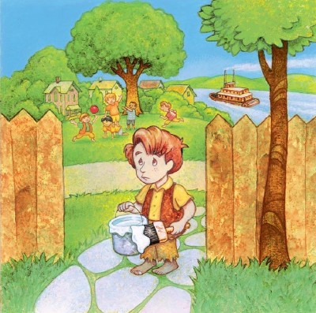
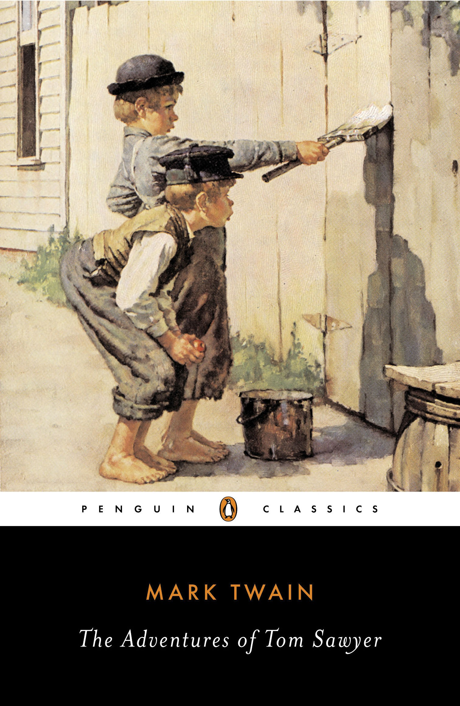
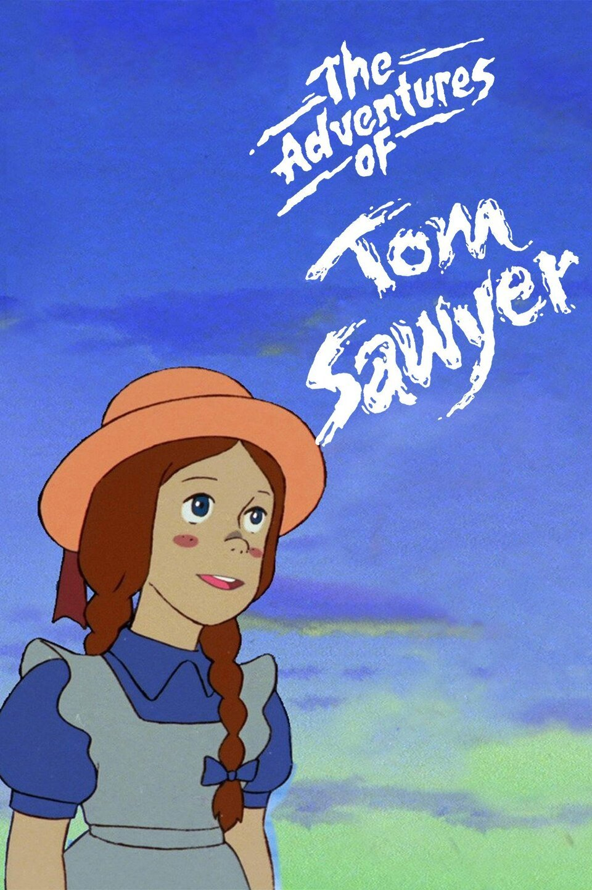

An imaginative and mischievous boy named Tom Sawyer lives with his Aunt Polly and his half-brother, Sid, in the Mississippi River town of St. Petersburg, Missouri. After playing hooky from school on Friday and dirtying his clothes in a fight, Tom is made to whitewash the fence as punishment on Saturday. At first, Tom is disappointed by having to forfeit his day off. However, he soon cleverly persuades his friends to trade him small treasures for the privilege of doing his work. He trades these treasures for tickets given out in Sunday school for memorizing Bible verses and uses the tickets to claim a Bible as a prize.
 He loses much of his glory, however, when, in response to a question to show off his knowledge, he incorrectly answers that the first two disciples were David and Goliath.
Tom falls in love with Becky Thatcher, a new girl in town, and persuades her to get “engaged” to him. Their romance collapses when she learns that Tom has been “engaged” before—to a girl named Amy Lawrence. Shortly after being shunned by Becky, Tom accompanies Huckleberry Finn, the son of the town drunk, to the graveyard at night to try out a “cure” for warts. At the graveyard, they witness the murder of young Dr. Robinson by the Native-American “half-breed” Injun Joe. Scared, Tom and Huck run away and swear a blood oath not to tell anyone what they have seen. Injun Joe blames his companion, Muff Potter, a hapless drunk, for the crime.
Potter is wrongfully arrested, and Tom’s anxiety and guilt begin to grow.
Tom, Huck, and Tom’s friend Joe Harper run away to an island to become pirates. While frolicking around and enjoying their newfound freedom, the boys become aware that the community is sounding the river for their bodies. Tom sneaks back home one night to observe the commotion. TheirAfter a brief moment of remorse at the suffering of his loved ones, Tom is struck by the idea of appearing at his funeral and surprising everyone. He persuades Joe and Huck to do the same. Their return is met with great rejoicing, and they become the envy and admiration of all their friends.
Back in school, Soon Muff Potter’s trial begins, and Tom, overcome by guilt, testifies against Injun Joe. Potter is acquitted, but Injun Joe flees the courtroom through a window.
Summer arrives, and Tom and Huck go hunting for buried treasure in a haunted house. TheirAfter venturing upstairs they hear a noise below. Peering through holes in the floor, they see Injun Joe enter the house disguised as a deaf and mute Spaniard. He and his companion, an unkempt man,
 plan to bury some stolen treasure of their own. From their hiding spot, Tom and Huck wriggle with delight at the prospect of digging it up. By an amazing coincidence, Injun Joe and his partner find a buried box of gold themselves. When they see Tom and Huck’s tools, they become suspicious that someone is sharing their hiding place and carry the gold off instead of reburying it.
Huck begins to shadow Injun Joe every night, watching for an opportunity to nab the gold. Meanwhile, Tom goes on a picnic to McDougal’s Cave with Becky and their classmates. That same night, Huck sees Injun Joe and his partner making off with a box.